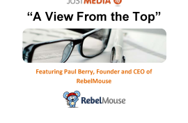
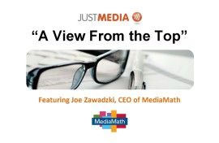
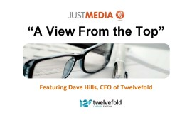

[ White Papers ]
We’re pleased to provide A View From the Top, a content series highlighting vision and insights from some of the media industry's top media luminaries.
Featuring Jim McNiel, CMO, NETSCOUT
Welcome to a very special edition of A View from the Top featuring, for the first time, an interview with a Just Media client - Jim McNiel, VP Marketing at Netscout. Jim has kindly agreed to share his thoughts around the challenges and benefits of relaunching and refreshing a well-established technology brand and what goes into that process. The accompanying advertising campaign used programmatic media, video, traditional display and social media to reach the core IT pro audience.
Featuring Maria Sipka, Co-Founder & CEO
In this edition we talk to Maria Sipka, CEO of Linqia, a technology company that connects digital storytellers with brands. For those not familiar with them, Linqia matches clients and agencies to relevant storytellers (aka bloggers, influencers, etc.) who are then commissioned to write on their behalf, creating unique content and activating their communities. It’s a brilliant model with a performance-based cost structure, and one we used recently for clients with spectacular results.

Featuring Lon Otremba, President & CEO, Bidtellect
This edition features Lon Otremba, President & CEO of Bidtellect. You'll learn about Bidtellect's vision; their advice for marketers; and their view of the growing movement around Branded / Sponsored Content. Found in 2011, Bidtellect's mission in life is to facilitate efficiency in Native Ad buying, selling and delivery across the web. They have assembled a team of veteran ad tech pioneers from the likes of Advertising.com, CNET, AOL, Millennial Media, PointRoll, and IAC.
Featuring Justin Choi, CEO, Nativo
This edition features programmatic native advertising pioneer Justin Choi, CEO of Nativo. You'll learn about Nativo's unique approach to what they call "true" native advertising. Nativo has quickly scaled its publisher network to over 260 partners and can deliver content placements across multiple sites in one fell swoop, matching the look, feel and behavior of each specific site. This is one platform you need to know about if you plan to embark on the journey of branded content marketing.
Featuring Scott Meyer, CEO, Ghostery
This edition features Ghostery, CEO Scott Meyer. Ghostery is one of my favorite browser tools because it enables me to instantly see the tracking codes that fire when I visit a web page. For privacy geeks you will love (and be horrified) by what this can show you. Through this I can see what data companies are tracking me. This use can extend to reviewing client sites (and their competitors too) to quickly evaluate the level of sophistication they have in the digital marketing mix. But Ghostery does so much more. Critically they can help clients adhere to strict privacy guidelines and help discover potential security issues that using ad technology can open. It's cool stuff marketers need to stay informed about.
- 
Featuring Paul Berry, CEO, RebelMouse
This issue features RebelMouse CEO Paul Berry (former CTO of the Huffington Post). RebelMouse, besides having a cool name, is an innovative, SaaS-based digital publishing platform wired for social engagement and content distribution. The platform is designed to build engaging content destinations, connect multiple content and social feeds, deliver community and advocacy, and distribute your most engaging content across the web -- backed by insightful analytics data. In this "A View from the Top," Paul shares the RebelMouse position in the marketing ecosystem, a deeper background on his company and offers advice for CMOs and all digital marketers.
Featuring Adam Singolda, CEO, Taboola
This issue features Taboola CEO, Adam Singolda.For those not familiar, Taboola is one of the industry's leading paid content distribution platforms. This is a category that is experiencing a massive growth curve as more and more marketers realize that it's a valuable and extremely complimentary tactic to more traditional search and display media campaigns. But it needs new skills and a different approach which can sometime be intimidating. In this paper, Adam helps lift the mystery and offers some simple advice on how to successfully build this into the marketing mix.
Featuring Mike Kelly, CEO, Prelytix
This issue brings the visionary thoughts and insights of Prelytix CEO Mike Kelly. An emerging player in the B2B media tech space, Prelytix leverages a unique combination of predictive analytics, content targeting and IP targeting (as a vital alternative to cookie based technology companies) to build campaigns for their growing client base. Think key account marketing programs; competitive install base targeting; etc. Prelytix is working hard to deliver on the promise of matching client message to customer need. Mike's thoughts are grounded in practical experience of building solutions that work.
Featuring Scott Knoll, CEO, Integral Ad Science
This issue is an absolute DO NOT MISS for anyone involved in digital media. Why? Because Scott Knoll, CEO of Integral Ad Science, lifts the lid on the dark underbelly of digital advertising and gives insight into how we can start to combat the fraudsters.
Why Radio is Still Relevant in a Digital Age
In this white paper, the team at Just Media make the case for why radio is still relevant and why it deserves at least consideration for many different types of campaigns.
2012 Marketing Analytics Survey
This white paper gives results from our 2012 survey of technology marketing departments use of analytics tools. How do you compare to our 51 tech company responders? Do you have the same suite of tools. the same issues with implementation or the same level of use of data? Read our report including key agency opinions on the data and what is says about future use of analytics.
The Dirty Secrets of Search Campaigns
This white paper addresses the common concerns related to search and offers insight and explanations that can be easily shared. We hope it helps you run successful campaigns and manage expectations.
Conquesting: How, Why and Where Competitors Can Hit Your Marketing World
Conquesting: The targeting of advertising or marketing messages towards specific competitor content, locations or marketing activities to intercept and disrupt customers and sales prospects relationships and raise own profile.

Technology Buying: How Consumers Make Decisions in a Social Media World
Do users trust comments found on social media sites like Facebook and Twitter? Just Media has the research.
Every Impression Counts! An Advertising Philosophy
The advantages of Just Media, Inc's "Every Impression Counts" philosophy and some of the key ramifications on planning and measurement when this approach is applied to advertising campaigns.
Best Practices for Successful Lead Generation Campaigns
The 5 Questions you need to ask before any lead generation campaign. Get the basics right if you want to succeed.
CBS Interactive: Online Display Advertising
Proving the Real Value of Online Digital Advertising: It's Quantified Effect on Organic Down-Funnel Activity.
Brands Selling Brands
Just what is media properties brand value and how does one leverage it when planning a campaign? Find out in the Brand Selling Brands white paper.
Reaching Decision Makers Through Global Airport Advertising
An increasing number of technology companies are using international airport advertising to build brands. Our paper analyzes some sample campaigns and where the key airport traffic is focused.
- 
Featuring Joe Zawadzki, CEO, MediaMath
In this issue we feature Joe Zawadzki, CEO of MediaMath. A leader in the demand side platform (DSP) category, MediaMath provides the technology and back office services to trade across all leading digital advertising channels. No one in digital marketing can afford not to know about programmatic media buying.
- 
Featuring Dave Hills, CEO, Twelvefold
This issue features Dave Hills from Twelvefold Media, a company which no B2B marketer should ignore given the power it can deliver to their media mix. Simply put, the Twelvefold platform can help deliver page level targeting to campaigns so advertisers can really capture long tail content across the web and execute on subject and competitor targeting in stealth mode compared to using named brand sites.
Featuring Russell Glass, CEO, Bizo
This issue features the thoughts and insights from Russell Glass, CEO of Bizo. For those who are not familiar, Bizo has revolutionized the digital media space for B2B marketers by bringing increasingly exciting and innovative targeting capabilities to the market. Bizo really does represent the new evolution in marketing technology and every B2B marketer should be finding out about the tools they offer and read Russell's vision for the future of data integration.
Featuring Don Hawk, Co-Founder & Executive Director of Product Innovation, TechTarget
This issue features Don Hawk, founder of TechTarget one of the most important technology publishers in the world. Don is now responsible for developing innovative product solutions for TechTarget, so he's right at the bleeding edge of how publishers are exploiting user behavior data to drive powerful lead generation and sales solutions.
Featuring Michael Friedenberg, CEO, IDG Communications Worldwide
In this first issue, we have the thoughts and opinions of IDG's very own (and newly appointed) global CEO Michael Friedenberg. For those of us who have followed the dramatic shift in technology publishing over the last ten years, the insight and perspective offered by Michael helps explain how IDG has remained relevant, by constant transformation and innovation.
© 2015 — JUST MEDIA, INC. All Rights Reserved.